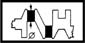
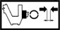
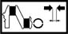
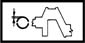

CRANKSHAFT
- Path
- Technical Data > Manufacturing data > 10 ENGINE > 1024 CRANKSHAFT AND FLYWHEEL > CRANKSHAFT
- Kind
- technical data / specifications
- Applies to
- all engines; all production periods
- Interactive page
- https://sloeber94.github.io/elrnDB-aGt/en/#/2921826
Applies to: all engines; all production periods
Clearance between big end bearings-Crankpins (mm) | Validity | |||
|---|---|---|---|---|
0.016 ÷ 0.070 | 1.9 JTD 16V | |||
Clearance between crankshaft bearings - main journals (mm) | Validity | |||
0.011 ÷ 0.071 | 1.9 JTD 16V | |||
Crankpin diameter (mm) | Validity |  | ||
Category B | Category A | Category C | ||
50.793 ÷ 50.799 | 50.787 ÷ 50.793 | 50.799 ÷ 50.805 | 2.0 JTS | |
Crankpin diameter (mm) | Validity | |||
Category B | Category C | Classe A | ||
50.793 ÷ 50.799 | 50.787 ÷ 50.793 | 50.799 ÷ 50.805 | 1.9 JTD 16V | |
Crankpin diameter (mm) | Validity | |||
Category B | Classe A | |||
51.980 - 51.990 | 51.990 - 52.000 | 3.2 V6 | ||
Crankpin diameter (mm) | Validity | |||
Category B | Classe A | |||
51.980 ÷ 51.990 | 51.990 ÷ 52.000 | 3.2 V6 | ||
Crankpin diameter undersize (mm) | Validity |  | ||
0.127 | 2.0 JTS | |||
Crankpin undersize (mm) | Validity | |||
0.127 | 1.9 JTD 16V | |||
Crankpin/bearing shell play (mm) | Validity |  | ||
0.031 ÷ 0.051 | 2.0 JTS | |||
Crankpin/big end bearing play (mm) | Validity |  | ||
0.030 ÷ 0.056 | 2.0 JTS | |||
Crankshaft bearing thickness (mm) | Validity |  | ||
Category B | Category C | Class A | ||
1.839 ÷ 1.843 | 1.842 ÷ 1.846 | 1.836 ÷ 1.840 | 2.0 JTS | |
Crankshaft end float (mm) | Validity |  | ||
0.059 ÷ 0.221 | 2.0 JTS | |||
End float (mm) | Validity | |||
0.080 ÷ 0.265 | 3.2 V6 | |||
End float (mm) | Validity | |||
0.049 - 0.211 | 1.9 JTD 16V | |||
Main bearing journal diameter (mm) | Validity | |||
Category B | Category A | Category C | ||
52.988 ÷ 52.994 | 52.982 ÷ 52.988 | 52.994 ÷ 53.000 | 2.0 JTS | |
Main bearing journal diameter (mm) | Validity | |||
Category B | Category C | Classe A | ||
59.967 - 59.973 | 59.961 - 59.967 | 59.973 - 59.979 | 3.2 V6 | |
Main bearing journal diameter (mm) | Validity | |||
Category B | Category C | Classe A | ||
59.967 ÷ 59.973 | 59.961 ÷ 59.967 | 59.973 ÷ 59.979 | 3.2 V6 | |
Main bearing journal diameter (mm) | Validity | |||
Category B | Category C | Classe A | ||
59.988 ÷ 59.994 | 59.982 ÷ 59.988 | 59.994 ÷ 60.000 | 1.9 JTD 16V | |
Main journal diameter undersize (mm) | Validity | |||
0.127 | 1.9 JTD 16V 2.0 JTS | |||
Main journal-bearing clearance (mm) | Validity | |||
Category B | Category A | Category C | ||
0.000 ÷ 0.024 | 0.000 ÷ 0.024 | 0.000 ÷ 0.025 | 3.2 V6 | |
Main journals/bearing clearance (mm) | Validity | |||
Category B | Category A | |||
0.023 ÷ 0.063 | 0.020 ÷ 0.060 | 3.2 V6 | ||